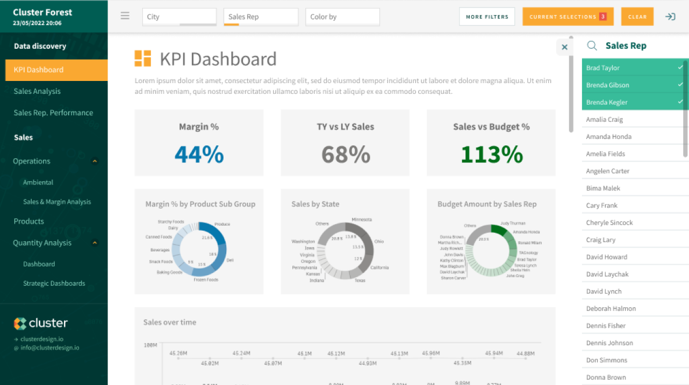
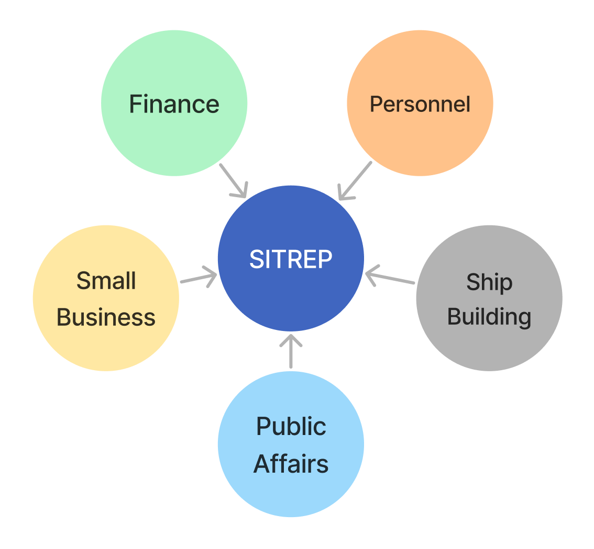
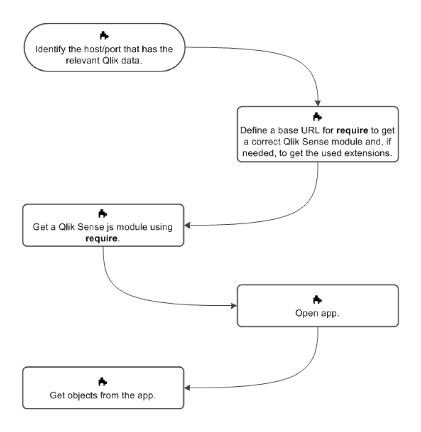
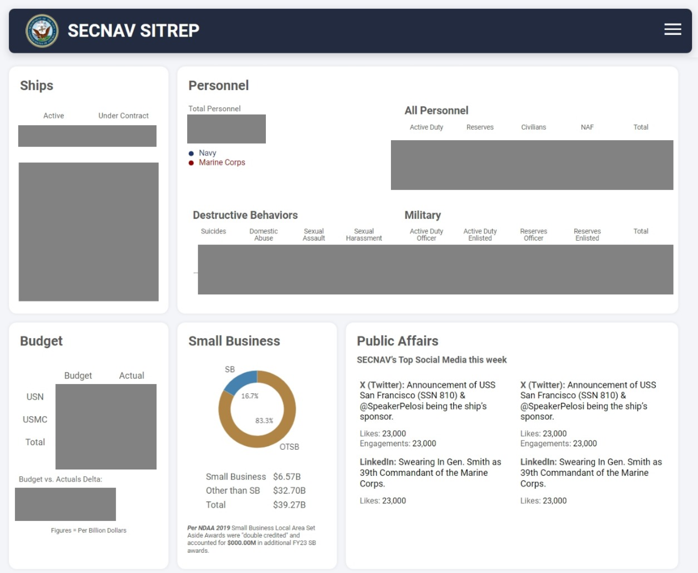

Qlik Mashup Report
Department of the Navy Analytics
Brand/Project:
EMI Advisors, Department of the Navy Performance Improvement Office, Data Analytics
Role:
UI Dev/Designer
Date:
Q3 2023-Q1 2024
Context:
There was a need from our client to integrate data from disparate Qlik dashboards into one location but no clear way to achieve that. I initiated discovery of Qlik’s web feature and API connections as well as designing and developing these web pages.
The Problem
Our client was manually copying and pasting data from different performance dashboard into a powerpoint report because their analytics platform did not allow for disparate data clusters and dashboards to connect.
* Additional Considerations:
- Any solution needed to work within the client’s secure analytics platform
- The software’s limited GUI the styles/UI for our dashboards
The Solution
Three step approach of research, data owner outreach, and UI design.
Initial Manual Report

*Sensitive information has been redacted
Our client was spending many hours copy and pasting numbers into a powerpoint presentation.
Our intent was to build an automated data report to replace this process and improve efficiency.
Period of R&D for analytics tools

Our client used a few different BI tools including Tableau, Qlik, and Power BI to manage data. After some research we landed on a low code web page builder within Qlik called Qlik Mashup.
This would meet our need to display data and have the ability to optimize for mobile and fine tune layout layout and styles.
Meeting with Data Contacts
In order to build out our product, we needed to meet with owners of the data from different areas within the organization.
Some of these departments did not have life data feeds and this required guidance and relationship building to work towards.
Some data also had strict security and access protocol.

Making Data Connections

- Qlik mashup utilizes an API to call data and visualizations from Qlik dashboards
- I looked over the documentation and wrote out the calls to fetch data and objects from Qlik dashboards using Qlik’s app.getObject()
- I worked to get access to and collaborate with dashboard owners to ensure security protocols were followed
The Results
A web-based automated report built using Qlik’s Mashup functionality
I worked with the client to build a design based on the original analog report. From there I built the layout and styles in HTML CSS and JavaScript. Lastly I incorporated connections to the data and pulled visualizations as needed.
*Sensitive information has been redacted
